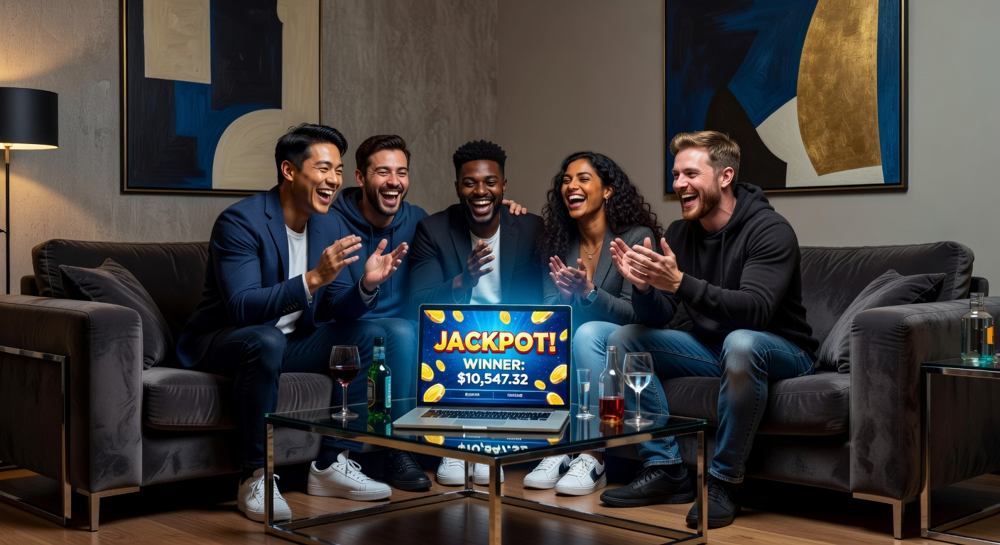
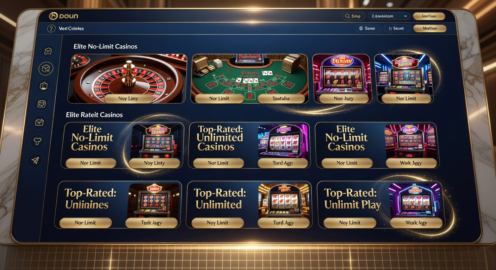
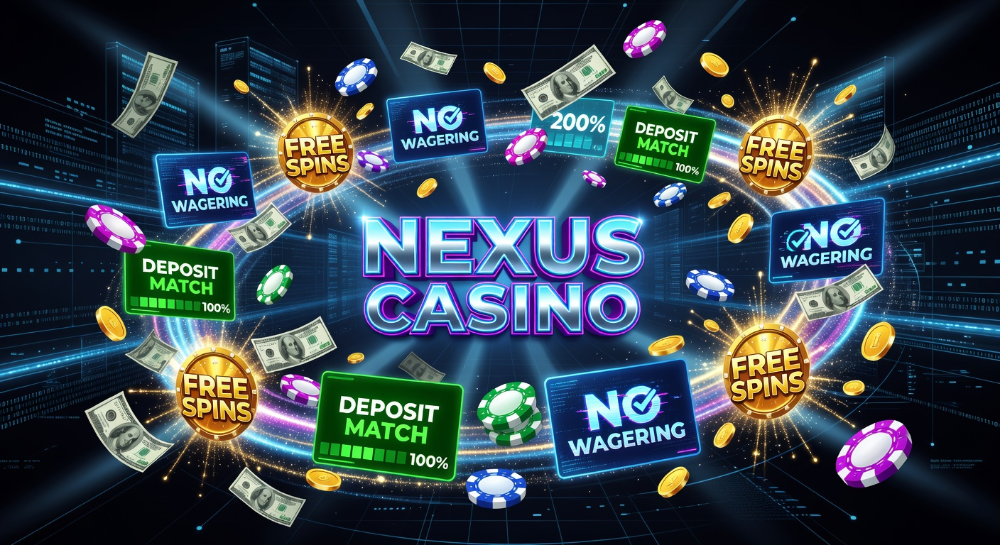

Online casino zonder limieten: De gids voor onbeperkt gokken in 2026
In het huidige kansspeljaar 2026 is het landschap van de online gokindustrie drastisch veranderd. Sinds de strengere regelgeving van de Kansspelautoriteit (KSA) met betrekking tot speellimieten en stortingsgrenzen, zoeken steeds meer Nederlandse spelers naar alternatieve wegen. Een online casino zonder limieten biedt de vrijheid die veel ervaren gokkers en high rollers missen bij de vergunde aanbieders in Nederland. Waar men vroeger genoegen nam met de standaard restricties, is de behoefte aan autonomie over het eigen speelgedrag en budget in 2026 groter dan ooit tevoren.
Het concept van een online casino zonder limieten draait niet alleen om het kunnen storten van onbeperkte bedragen. Het gaat om een integrale ervaring waarbij de speler zelf bepaalt hoe lang hij speelt, hoeveel hij per ronde inzet en wanneer hij zijn winsten opneemt, zonder dat een algoritme of een toezichthouder ingrijpt. In deze uitgebreide gids duiken we diep in de wereld van ongelimiteerd gokken. We analyseren de beste platforms van 2026, bespreken de veiligheidsaspecten en leggen uit hoe u verantwoord kunt blijven spelen in een omgeving die geen grenzen stelt.
De populariteit van deze platforms is niet zonder reden gestegen. Met de komst van geavanceerde betaalmethoden zoals crypto en de groei van internationale licentieverstrekkers, is een online casino zonder limieten tegenwoordig net zo veilig en betrouwbaar als een platform met een lokale vergunning, mits u weet waar u moet kijken. Of u nu een speler bent die houdt van hoge inzetten bij live blackjack of simpelweg niet geconfronteerd wilt worden met verplichte time-outs, deze gids biedt u alle nodige informatie om een weloverwogen keuze te maken.
Voor meer algemene informatie over de werking van digitale gokomgevingen kunt u terecht op deze Wikipedia-pagina over online casino's. In de volgende secties zullen we specifiek ingaan op de Nederlandse context van 2026 en waarom "no limit" de nieuwe standaard aan het worden is voor de serieuze liefhebber.
Wat is een online casino zonder limieten precies?
Een online casino zonder limieten is een gokplatform dat geen strikte, door de overheid opgelegde grenzen hanteert voor stortingen, inzetten, verliezen of sessieduur. In Nederland zijn aanbieders met een KSA-licentie sinds eind 2024 verplicht om zeer strikte netto stortingslimieten te handhaven. In 2026 zijn deze regels verder aangescherpt, waardoor veel spelers zich beperkt voelen in hun vrijheid. Een casino dat deze limieten niet hanteert, werkt vaak onder internationale licenties uit jurisdicties zoals Malta, Curaçao of de Kahnawake Gaming Commission.
Bij een online casino zonder limieten krijgt de speler de volledige controle terug. Dit betekent niet dat er helemaal geen veiligheidsmechanismen zijn, maar deze zijn vaak optioneel en zelf in te stellen. In plaats van dat het systeem bepaalt dat u na €500 aan stortingen in een maand moet stoppen, laat een no limit platform u zelf uw financiële grenzen bepalen. Dit is essentieel voor high rollers die gewend zijn met grotere bedragen te spelen en voor wie de Nederlandse limieten simpelweg ontoereikend zijn.
Bovendien hebben deze casino's vaak geen restricties op de hoogte van de inzetten per draai aan een gokkast of per hand bij tafelspellen. Waar een Nederlandse aanbieder u soms beperkt tot een maximale inzet per ronde om impulsief gedrag tegen te gaan, biedt een online casino zonder limieten vaak de mogelijkheid om duizenden euro's per ronde in te zetten. Dit creëert een authentieke casino-ervaring die vergelijkbaar is met die van de grote casino's in Las Vegas of Macau, maar dan vanuit het comfort van uw eigen huis.
Waarom kiezen spelers voor gokken zonder restricties?

De verschuiving naar een online casino zonder limieten in 2026 is voornamelijk gedreven door de wens naar een gepersonaliseerde speelervaring. Veel spelers ervaren de Nederlandse regelgeving als betuttelend. Wanneer u een stabiel inkomen heeft en verantwoord kunt omgaan met grotere bedragen, voelt een verplichte limiet als een onnodige inbreuk op uw persoonlijke keuzes. In een no limit omgeving wordt de speler behandeld als een volwassene die zijn eigen financiële risico's kan inschatten.
Een andere belangrijke reden is de snelheid van het spel. In gereguleerde markten worden vaak vertragingen ingebouwd tussen spins (de zogenaamde 'two-second rule') en is de 'autoplay' functie soms verboden. Een online casino zonder limieten biedt vaak de volledige technische functionaliteit van de softwareleveranciers. Dit betekent dat u kunt genieten van snelle spins, bonus buys en geavanceerde autoplay-opties die de spelervaring vlotter en spannender maken.
Ten slotte spelen de bonussen een grote rol. Omdat deze casino's niet gebonden zijn aan de strikte Nederlandse reclame- en bonusregels, kunnen ze veel royalere pakketten aanbieden. In 2026 zien we bij een online casino zonder limieten vaak welkomstbonussen die in de duizenden euro's lopen, gecombineerd met gunstige voorwaarden die bij lokale aanbieders simpelweg niet meer mogelijk zijn vanwege de strenge wetgeving. Het potentieel voor een hogere 'Return on Investment' trekt veel slimme spelers aan.
Hogere inzetmogelijkheden voor high rollers
Voor de categorie high rollers is een online casino zonder limieten de enige werkbare optie in 2026. Wanneer uw gemiddelde inzet bij live roulette €100 of meer is, loopt u bij Nederlandse casino's al snel tegen de muren op. De maximale inzetlimieten bij no limit casino's zijn vaak tien tot honderd keer hoger. Dit stelt spelers in staat om progressieve inzetstrategieën te gebruiken zonder gehinderd te worden door een tafelmaximum dat te laag is.
Niet alleen de inzet per hand is hoger, ook de limieten voor het uitbetalen van winsten zijn doorgaans veel soepeler. In een online casino zonder limieten kunt u vaak grote winsten in één keer laten uitbetalen, in plaats van in wekelijkse termijnen van €5.000, wat bij veel beperkte casino's de standaard is. Dit is cruciaal voor spelers die mikken op de grote jackpots of die winstgevende sessies direct willen verzilveren.
Geen verplichte stortingslimieten van de KSA
De KSA heeft in de afgelopen jaren de regels voor de "netto stortingslimiet" steeds verder aangescherpt. Voor veel spelers betekent dit dat ze na een paar stortingen al geblokkeerd worden, zelfs als ze dat geld makkelijk kunnen missen. In een online casino zonder limieten bestaat dit systeem niet. U bepaalt zelf of u €100 of €10.000 stort. Deze vrijheid is de kern van de aantrekkingskracht van buitenlandse aanbieders in 2026.
Het wegvallen van deze verplichting betekent ook minder bureaucratie. U hoeft geen loonstrookjes of bankafschriften te overleggen om te bewijzen dat u een hogere limiet kunt betalen. In een online casino zonder limieten wordt uw privacy gerespecteerd en wordt er niet ongevraagd in uw financiële huishouding gewroet, zolang u zich aan de algemene voorwaarden en anti-witwasregels houdt.
Verschillende soorten limieten bij online casino's
Om te begrijpen wat een online casino zonder limieten zo uniek maakt, moeten we kijken naar de verschillende soorten restricties die normaliter aanwezig zijn. In de gokwereld van 2026 maken we onderscheid tussen harde limieten (opgelegd door de wet) en zachte limieten (instelbaar door de speler). Een no limit casino verwijdert de harde limieten en laat de controle over de zachte limieten volledig bij de gebruiker.
De meest voorkomende beperkingen hebben betrekking op de financiële transacties en de tijd die op de site wordt doorgebracht. Hoewel deze regels met goede bedoelingen zijn gemaakt om gokverslaving te voorkomen, treffen ze ook de groep recreatieve spelers die simpelweg een ongestoorde avond willen beleven. Een online casino zonder limieten kiest voor een model van eigen verantwoordelijkheid, waarbij tools voor zelfuitsluiting en limieten wel beschikbaar zijn, maar niet worden afgedwongen als standaardinstelling.
In de onderstaande tabel ziet u een vergelijking tussen de standaard Nederlandse limieten in 2026 en wat u kunt verwachten bij een typisch online casino zonder limieten:
| Type Limiet | Nederlands Casino (KSA) | Online Casino Zonder Limieten |
|---|---|---|
| Maandelijkse Storting | Vaak max. €400 - €700 netto | Onbeperkt / Flexibel |
| Maximale Inzet (Slots) | Vaak beperkt tot €1 - €5 per spin | Tot €100+ per spin |
| Sessieduur Limiet | Verplicht in te stellen en afgedwongen | Vrij te bepalen door speler |
| Autoplay Functie | Meestal verboden | Beschikbaar |
| Bonus Hoogte | Gelimiteerd door strenge regels | Zeer hoog (vaak duizenden euro's) |
Stortingslimieten en transactiegrenzen
Stortingslimieten zijn vaak de grootste bron van frustratie voor de moderne gokker. Bij een online casino zonder limieten kunt u via diverse kanalen geld storten zonder dat er een maandtotaal wordt bijgehouden dat uw toegang blokkeert. Dit is met name handig voor spelers die hun winsten van het ene casino willen herinvesteren in een ander casino zonder tegen bureaucratische muren op te lopen.
Daarnaast zijn de transactiegrenzen per storting vaak veel ruimer. Waar u bij een beperkt casino misschien maximaal €2.000 per keer kunt overboeken, staan no limit casino's vaak transacties van €10.000 of meer toe, zeker wanneer u gebruikmaakt van cryptovaluta zoals Bitcoin of Ethereum. Dit maakt het beheren van een grotere bankroll aanzienlijk efficiënter.
Tijdslimieten en sessiebeheer
In 2026 zijn tijdslimieten bij legale Nederlandse aanbieders zeer dwingend. Zodra uw tijd op is, wordt u direct uitgelogd, vaak midden in een spannende reeks of een bonusronde. Een online casino zonder limieten hanteert deze harde stops niet. U kunt zelf beslissen wanneer u stopt met spelen. Natuurlijk is het belangrijk om pauzes te nemen, maar in een online casino zonder limieten bepaalt u het ritme zelf.
Sessiebeheer in een vrije omgeving betekent ook dat u niet elke keer dat u inlogt herinnerd wordt aan uw verliezen of speeltijd via irritante pop-ups. Dit zorgt voor een veel vloeiendere en meer meeslepende ervaring. Voor spelers die gokken als een vorm van entertainment zien, is deze ononderbroken gameplay een van de grootste voordelen van een casino zonder speellimiet.
Verlieslimieten en winstplafonds
Een minder bekende maar wel aanwezige beperking is de verlieslimiet. Sommige systemen dwingen u te stoppen zodra u een bepaald bedrag heeft verloren. In een online casino zonder limieten is er geen systeem dat u vertelt dat u 'genoeg' verloren heeft. Hoewel dit risico's met zich meebrengt, geeft het de ervaren speler de kans om door een mindere fase heen te spelen en eventueel verliezen terug te winnen (al moet men hier altijd voorzichtig mee zijn).
Winstplafonds komen soms voor bij bonussen, waarbij u bijvoorbeeld maximaal 10 keer uw storting kunt winnen. Bij een kwalitatief online casino zonder limieten zijn deze winstplafonds vaak afwezig of zeer hoog. Dit betekent dat als u die enorme jackpot van 50.000x uw inzet raakt, u ook daadwerkelijk het volledige bedrag krijgt uitbetaald, zonder dat kleine lettertjes uw winst beperken.
De beste online casino's zonder limieten beoordeeld

In 2026 zijn er enkele namen die met kop en schouders boven de rest uitsteken als het gaat om betrouwbaarheid en vrijheid. Wanneer we een online casino zonder limieten beoordelen, kijken we niet alleen naar de afwezigheid van restricties, maar ook naar de kwaliteit van het spelaanbod en de snelheid van uitbetalen. Hieronder bespreken we de topkeuzes van dit jaar.
Een van de absolute koplopers is BetNinja. Dit platform staat bekend als het beste online casino zonder Cruks en biedt een indrukwekkend pakket voor nieuwe spelers. Met 100 gratis spins bij aanmelding en een omgeving die volledig gericht is op high rollers, heeft BetNinja in 2026 een enorme trouwe schare fans opgebouwd. De interface is modern en de limieten zijn nagenoeg onzichtbaar voor de gemiddelde speler.
Een andere sterke speler is Zumo. Zumo wordt in de community vaak geprezen als het best uitbetalende casino zonder limiet. Dit komt door de extreem hoge RTP (Return to Player) op hun exclusieve slots en de afwezigheid van uitbetalingsbeperkingen. Als u bij Zumo een grote klapper maakt, staat het geld vaak binnen enkele minuten op uw crypto-wallet of e-wallet. Dit niveau van service is wat spelers verwachten van een hoogwaardig online casino zonder limieten.
Voor de mobiele spelers is WestAce de beste keuze in 2026. WestAce is het beste mobiele no limit casino, met een app en webinterface die vloeiend werkt op alle apparaten. Ondanks de afwezigheid van limieten, biedt WestAce een zeer robuuste omgeving voor verantwoord spelen, waar u zelf limieten kunt instellen als u dat wenst, zonder dat de overheid over uw schouder meekijkt. WestAce combineert vrijheid met een moderne uitstraling.
Ten slotte mogen we Golden Panda niet vergeten. Dit is een casino zonder Cruks met een spectaculaire 200% welkomstbonus tot maar liefst €5000. Voor spelers die op zoek zijn naar de grootste bankroll-boost bij de start, is Golden Panda de ideale plek. Dit online casino zonder limieten heeft een licentie in een gerespecteerde buitenlandse jurisdictie, wat zorgt voor een veilige maar vrije spelomgeving.
Hoe wij no limit casino's testen en vergelijken
Onze beoordelingen komen niet zomaar tot stand. Om te bepalen of een online casino zonder limieten veilig en eerlijk is, hanteren we een strikt protocol. In 2026 zijn er veel nieuwe aanbieders bijgekomen, en niet elke partij is even betrouwbaar. Wij storten zelf geld, spelen de spellen en proberen winsten op te nemen om de werkelijke ervaring te testen. Hierbij letten we op verschillende cruciale factoren die voor de speler van belang zijn.
De eerste stap in ons proces is het verifiëren van de licentie. Hoewel we spreken over een online casino zonder limieten, betekent dit niet dat er geen regels zijn. Een licentie uit Curaçao (vooral de nieuwe GCB-licenties van 2026) of Malta biedt een basisniveau van eerlijkheid en spelersbescherming. We controleren of de spellen worden geaudit door onafhankelijke instanties zoals eCOGRA of iTech Labs, zodat u zeker weet dat de uitkomsten echt willekeurig zijn.
Daarnaast kijken we naar de "vloeibaarheid" van de limieten. Een echt online casino zonder limieten moet die belofte waarmaken bij zowel stortingen als uitbetalingen. We testen hoe de klantenservice reageert op verzoeken om hogere limieten voor VIP-spelers en hoe snel documenten voor KYC (Know Your Customer) worden verwerkt. Een casino dat u dagenlang laat wachten op een uitbetaling onder het mom van controle, scoort bij ons laag.
Onze criteria voor een topnotering zijn onder andere:
- Eerlijkheid van de bonusvoorwaarden: Geen verborgen addertjes onder het gras in de kleine lettertjes.
- Snelheid van uitbetaling: Winsten moeten binnen 24 uur (of sneller via crypto) worden verwerkt.
- Spelaanbod: Aanwezigheid van top-providers zoals Evolution Gaming, Pragmatic Play en NetEnt.
- Klantenservice: 24/7 bereikbaarheid via live chat met deskundige medewerkers.
- Mobiele compatibiliteit: Een vlekkeloze ervaring op smartphone en tablet.
Bonussen en promoties bij aanbieders zonder restricties

Een van de leukste aspecten van een online casino zonder limieten zijn de royale bonussen. Omdat deze casino's niet te maken hebben met de strenge Nederlandse marketingrestricties, kunnen ze veel creatiever en vrijgeviger zijn. In 2026 zien we een trend waarbij bonussen niet alleen groter zijn, maar ook flexibeler in gebruik. Dit is een groot voordeel voor spelers die hun speeltijd willen maximaliseren met extra krediet.
Naast de standaard welkomstbonus bieden deze platforms vaak regelmatige extra's. Denk aan een reloadbonus in het weekend of speciale toernooien waarbij de prijzenpotten in de tienduizenden euro's lopen. Bij een online casino zonder limieten is de loyaliteitsbonus ook vaak veel uitgebreider. VIP-spelers kunnen rekenen op persoonlijke accountmanagers, exclusieve geschenken en zelfs uitnodigingen voor fysieke evenementen, iets wat bij Nederlandse aanbieders nagenoeg verdwenen is.
De meest gezochte bonus in 2026 is de cashback bonus zonder rondspeelvoorwaarden. Dit betekent dat u een percentage van uw verliezen terugkrijgt als echt geld, dat u direct kunt opnemen of opnieuw kunt inzetten. In een online casino zonder limieten is dit vaak de standaard voor trouwe spelers. Het biedt een vangnet en zorgt ervoor dat u altijd een tweede kans krijgt, zonder dat u vastzit aan ingewikkelde bonusregels.
Welkomstbonus en free spins
De welkomstbonus is het visitekaartje van elk online casino zonder limieten. Vaak bestaat dit uit een combinatie van een stortingsbonus (bijvoorbeeld 100% of 200%) en een flink aantal free spins. Bij aanbieders zoals BetNinja krijgt u bijvoorbeeld direct 100 gratis spins om de nieuwste gokkasten uit te proberen. Deze spins hebben vaak een hogere waarde dan de standaard €0,10 spins die u elders ziet.
Het is belangrijk om bij een online casino zonder limieten altijd de rondspeelvoorwaarden te controleren. Hoewel de bedragen hoog zijn, moet u het bonusgeld meestal een aantal keer inzetten voordat het opneembaar is. In 2026 zijn voorwaarden van 30x tot 40x de standaard bij de betrouwbare no limit casino's. Alles daaronder wordt gezien als zeer gunstig voor de speler.
Cashback bonussen zonder rondspeelvoorwaarden
De cashback bonus is in 2026 uitgegroeid tot de favoriet van de ervaren gokker. Stel u speelt in een online casino zonder limieten en heeft een ongelukkige week waarin u €1.000 verliest. Met een 10% cashback ontvangt u maandag €100 terug in uw account. Het mooie van een no limit omgeving is dat dit bedrag vaak direct opneembaar is. Geen gedoe met inzetvereisten, gewoon een eerlijke tegemoetkoming.
Veel moderne platforms zoals Zumo en CoinCasino bieden zelfs dagelijkse cashback aan. Dit verlaagt het huisvoordeel aanzienlijk en geeft u meer "value for money". In een online casino zonder limieten wordt de speler gewaardeerd voor zijn omzet, en cashback is de meest transparante manier om die waardering te tonen. Het is een essentieel onderdeel van een duurzame gokstrategie in 2026.
Nadelen no limit casino’s: Waar moet u op letten?
Hoewel de voordelen van een online casino zonder limieten duidelijk zijn, is het belangrijk om ook de schaduwkanten te belichten. Het ontbreken van restricties legt namelijk een enorme verantwoordelijkheid bij de speler zelf. Voor mensen die gevoelig zijn voor gokverslaving, kan de afwezigheid van een netto stortingslimiet gevaarlijk zijn. Zonder de automatische rem van de KSA is het makkelijker om meer geld te verliezen dan u zich eigenlijk kunt veroorloven.
Een ander nadeel is de juridische bescherming. Wanneer u speelt bij een Nederlands casino, kunt u bij conflicten aankloppen bij de KSA. Bij een online casino zonder limieten met een buitenlandse licentie is dat lastiger. Hoewel gerenommeerde licentieverstrekkers in 2026 goede klachtenprocedures hebben, kan de communicatie in het Engels verlopen en kan het proces langer duren. Het is daarom cruciaal om alleen te spelen bij platforms met een uitstekende reputatie.
Daarnaast kan de afwezigheid van Cruks een risico vormen. Als u uzelf heeft uitgesloten van Nederlandse casino's om een pauze in te lassen, biedt een online casino zonder limieten vaak nog wel toegang. Dit vereist een grote mate van zelfdiscipline. Het is essentieel om gokken te blijven zien als entertainment en niet als een manier om geld te verdienen of problemen te ontvluchten. De vrijheid die deze casino's bieden, werkt alleen als u de controle over uzelf behoudt.
Stap voor stap: Beginnen bij een no limit casino
Wilt u de overstap maken naar een online casino zonder limieten? Het proces is doorgaans eenvoudiger en sneller dan bij de streng gereguleerde Nederlandse aanbieders. Hier is een kort stappenplan om veilig en snel aan de slag te gaan in 2026.
- Kies een betrouwbaar platform: Selecteer een van de door ons geteste casino's zoals BetNinja, WestAce of Golden Panda.
- Registreren: Klik op de 'Sign Up' knop en vul uw basisgegevens in. Vaak is dit proces binnen twee minuten voltooid omdat er minder initiële controles zijn.
- Stap 2: Storten: Ga naar de kassa (cashier) en kies uw gewenste betaalmethode. Of u nu kiest voor crypto, Skrill of een creditcard, de storting is meestal direct zichtbaar.
- Bonus activeren: Vergeet niet uw welkomstbonus of free spins te claimen tijdens de eerste storting.
- Spelen: U bent nu klaar om te genieten van een online casino zonder limieten. Kies uw favoriete game en bepaal zelf uw inzet!
Tijdens het registreren zult u merken dat u vaak direct gevraagd wordt of u vrijwillige limieten wilt instellen. Hoewel het een online casino zonder limieten is, raden we aan om voor uzelf een mentaal of fysiek budget vast te stellen. Dit helpt om de ervaring leuk en binnen de perken te houden, zelfs in een omgeving die u technisch gezien niet dwingt om te stoppen.
No limit casino betaalmethoden in 2026
De manier waarop we betalen bij een online casino zonder limieten is de afgelopen jaren sterk geëvolueerd. In 2026 zien we dat traditionele bankoverschrijvingen steeds vaker worden vervangen door snellere en meer anonieme methoden. De focus ligt op directheid; spelers willen dat hun storting direct beschikbaar is en dat hun winst nog sneller wordt uitbetaald. Dit is een van de speerpunten van de no limit ervaring.
E-wallets zoals Skrill en Neteller blijven populair vanwege hun gebruiksgemak en de scheiding tussen gokuitgaven en de hoofdbankrekening. Maar de echte revolutie in een online casino zonder limieten wordt gedreven door cryptocurrency. In 2026 accepteren bijna alle top-aanbieders Bitcoin, Ethereum en stablecoins zoals USDT. Deze methoden kennen vaak letterlijk geen transactielimieten, wat perfect past bij de filosofie van het platform.
Bovendien bieden crypto-betalingen een extra laag privacy. Hoewel u nog steeds een KYC-proces moet doorlopen bij een betrouwbaar online casino zonder limieten, hoeft uw bank niet te zien waar u uw geld aan uitgeeft. Voor veel Nederlandse spelers is deze privacy een belangrijke reden om te kiezen voor buitenlandse aanbieders boven de lokale, streng gecontroleerde opties.
Veilig betalen met crypto en e-wallets
Cryptocurrency is niet meer weg te denken uit de gokwereld van 2026. Bij een online casino zonder limieten kunt u vaak profiteren van lagere kosten en hogere bonussen als u met Bitcoin of Ethereum stort. De veiligheid wordt gegarandeerd door de blockchain-technologie, waardoor transacties onomkeerbaar en transparant zijn. Het is echter wel belangrijk dat u uw eigen wallet goed beveiligt.
E-wallets zoals Skrill bieden een vergelijkbaar niveau van snelheid. Het voordeel van Skrill in een online casino zonder limieten is dat u winsten vaak binnen een uur na goedkeuring al op uw rekening heeft staan. Voor de moderne speler die gewend is aan 'instant gratification', is dit een onmisbare functie. In 2026 is wachten op uw geld simpelweg niet meer acceptabel.
E-wallets en alternatieve betaalvormen
Naast de bekende namen zien we in 2026 ook steeds meer alternatieve betaalvormen opkomen in een online casino zonder limieten. Denk aan Revolut, Jeton of zelfs directe 'Open Banking' oplossingen die veiliger en sneller zijn dan de oude iDEAL-omgeving. Deze methoden zijn vaak geoptimaliseerd voor mobiel gebruik, wat perfect aansluit bij de trend van onderweg gokken.
Het belangrijkste bij het kiezen van een betaalmethode in een online casino zonder limieten is de limiet op de uitbetaling. Sommige methoden hebben dagelijkse limieten die lager liggen dan wat het casino toestaat. Controleer dit altijd vooraf, zodat u niet voor verrassingen komt te staan als u die grote winst wilt incashen. Een goede voorbereiding is het halve werk bij ongelimiteerd gokken.
Populaire spellen zonder inzetrestricties
In een online casino zonder limieten komt het spelaanbod pas echt tot zijn recht. Veel spelontwikkelaars ontwerpen hun games met bepaalde features die alleen werken als er geen beperkingen zijn op de inzet of de snelheid van draaien. Denk hierbij aan de populaire "Bonus Buy" functie, waarbij u direct toegang koopt tot de bonusronde. In veel gereguleerde markten is dit verboden, maar in een no limit casino is het een van de meest gespeelde features.
Live casino spellen zijn ook enorm populair in 2026. Bij een online casino zonder limieten kunt u aanschuiven aan VIP-tafels voor Roulette of Blackjack waar de minimuminzet soms €50 is en de maximuminzet wel €50.000 per ronde. Dit trekt een heel ander publiek aan dan de standaard tafels. De interactie met professionele dealers en de high-stakes omgeving zorgen voor een adrenalinekick die u nergens anders vindt.
Daarnaast zien we de opkomst van "Crash games" in elk online casino zonder limieten. Spellen zoals Aviator of JetX zijn razend populair in 2026 omdat ze simpel zijn, maar enorme multipliers kunnen bieden. Omdat er geen inzetlimieten zijn, kunnen spelers strategieën toepassen zoals de Martingale, wat in een beperkte omgeving vaak onmogelijk is vanwege het lage inzetplafond. De vrijheid in spelkeuze en strategie is wat deze platforms uniek maakt.
Nieuwe regels omtrent speellimieten in 2026
Het is essentieel om te begrijpen waarom de zoektocht naar een online casino zonder limieten zo explosief is gestegen. In 2026 heeft de Nederlandse overheid de "Wet Kansspelen op afstand" verder geëvalueerd en aangescherpt. De netto stortingslimieten zijn nu direct gekoppeld aan een centraal systeem, waardoor u over alle Nederlandse casino's heen een gezamenlijk plafond heeft. Voor veel mensen voelt dit als een inbreuk op hun privacy en keuzevrijheid.
Deze netto stortingslimieten houden rekening met wat u stort minus wat u uitbetaalt. Als u echter een maand veel heeft gewonnen en dat geld weer wilt inzetten, kan het systeem u alsnog blokkeren omdat u uw stortingslimiet heeft bereikt. In een online casino zonder limieten bestaat deze frustratie niet. U wordt niet gestraft voor het feit dat u vaker wilt spelen of met grotere bedragen wilt schuiven.
Bovendien zijn de regels voor 'ongewoon speelgedrag' in 2026 zeer strikt geworden bij KSA-casino's. Een plotselinge verhoging van uw inzet kan leiden tot een tijdelijke schorsing van uw account totdat u kunt aantonen waar het geld vandaan komt. Bij een online casino zonder limieten wordt er meer vertrouwd op de eigen verantwoordelijkheid van de speler, wat voor de meesten een veel prettiger uitgangspunt is.
Betrouwbaarheid en licenties buiten Nederland
Een veelgestelde vraag is: "Is een online casino zonder limieten wel betrouwbaar als het geen KSA-licentie heeft?" In 2026 is het antwoord een volmondig 'ja', mits u kiest voor gerenommeerde internationale licenties. De Malta Gaming Authority (MGA) en de vernieuwde Curaçao Gaming Control Board (GCB) stellen zeer hoge eisen aan hun licentiehouders. Ze controleren op eerlijkheid van de spellen, bescherming van spelersgegevens en het voorkomen van fraude.
Sterker nog, veel van deze internationale casino's hebben een groter budget voor beveiliging dan de kleine lokale aanbieders. Ze maken gebruik van de nieuwste SSL-encryptie en werken samen met onafhankelijke testbureaus. Een online casino zonder limieten dat al jarenlang een goede reputatie heeft in 2026, is vaak een veiligere gok dan een gloednieuwe Nederlandse aanbieder die nog moet bewijzen dat zijn systemen stabiel zijn.
Het is wel aan te raden om recensies van andere spelers te lezen. In de wereld van een online casino zonder limieten is 'word-of-mouth' en reputatie alles. Platforms die winsten niet uitbetalen of vage voorwaarden hanteren, overleven niet lang in de competitieve markt van 2026. De casino's die wij aanbevelen, hebben zichzelf bewezen als integere partners voor de serieuze gokker.
Verantwoord spelen in een vrije omgeving
Gokken zonder restricties vereist een sterke mindset. In een online casino zonder limieten bent u zelf de kapitein op uw schip. Dat betekent dat u moet weten wanneer het tijd is om het anker uit te werpen. Verantwoord spelen begint bij het vaststellen van een budget dat u volledig kunt missen. Zie gokken als een uitgave voor entertainment, vergelijkbaar met een avondje uit eten of een concertbezoek.
Maak gebruik van de zelfhulptools die zelfs een no limit casino vaak aanbiedt. U kunt meestal handmatig limieten instellen voor uw sessieduur of stortingen, ook al verplicht de wet het casino daar niet toe. Dit toont aan dat u de controle heeft. Als u merkt dat u verliezen probeert terug te winnen of als gokken uw dagelijks leven beïnvloedt, is het tijd om een pauze in te lassen. In 2026 zijn er gelukkig ook veel internationale organisaties die hulp bieden, los van de Nederlandse systemen.
Een gouden regel in een online casino zonder limieten is: stop terwijl u voor staat. Het is verleidelijk om door te spelen als u op een winstreeks zit, maar het huisvoordeel is altijd aanwezig. Door een gedeelte van uw winst direct uit te betalen en niet meer aan te raken, garandeert u dat u met een goed gevoel het platform verlaat. Balans is de sleutel tot langdurig plezier in de wereld van het online gokken.
Voor meer informatie over het herkennen van risicovol gedrag kunt u de richtlijnen raadplegen op Forbes, waar regelmatig artikelen verschijnen over de psychologie van financiële risico's en verantwoordelijkheid.
Vergelijking: KSA Casino vs. Online Casino Zonder Limieten
Om een definitieve keuze te maken, is het handig om de voor- en nadelen nog eens naast elkaar te zetten. Het jaar 2026 heeft ons geleerd dat er geen 'one-size-fits-all' oplossing is. De keuze voor een online casino zonder limieten hangt sterk af van uw persoonlijke speelstijl en uw behoefte aan vrijheid versus strikte bescherming.
| Kenmerk | KSA (Nederlands) | Zonder Limieten (Buitenlands) |
|---|---|---|
| Wettelijke Bescherming | Zeer hoog (Nederlands recht) | Gemiddeld (Internationaal recht) |
| Speelvrijheid | Beperkt door wetgeving | Maximaal |
| Privacy | Beperkt (Koppeling met BSN/Cruks) | Hoog (Vaak anoniem gokken mogelijk) |
| Betaalmethoden | Beperkt (vnl. iDEAL/Creditcard) | Breed (Crypto, E-wallets, etc.) |
| Bonussen | Bescheiden en strikt | Royaal en divers |
Zoals u ziet in de tabel, biedt een online casino zonder limieten op bijna alle fronten meer flexibiliteit. De afweging die u moet maken is of u die extra vrijheid aankunt zonder de vangrails die de Nederlandse overheid heeft geplaatst. Voor de ervaren speler die zijn eigen grenzen kent, is de keuze in 2026 vaak snel gemaakt.
Veelgestelde vragen over online casino's zonder limieten
Is een online casino zonder limieten legaal in Nederland?
In 2026 is het voor Nederlanders technisch gezien mogelijk om bij buitenlandse casino's te spelen. Hoewel de KSA zich richt op het aanpakken van onvergunde aanbieders, ligt de verantwoordelijkheid voor het kiezen van een platform bij de speler zelf. Het is niet illegaal voor een burger om een website te bezoeken, maar u geniet niet van de bescherming van de Nederlandse wet.
Kan ik me laten uitsluiten bij een casino zonder limiet?
Ja, elk gerenommeerd online casino zonder limieten biedt opties voor zelfuitsluiting. Hoewel ze niet zijn aangesloten bij Cruks, hebben ze hun eigen systemen om spelers op verzoek te blokkeren. Vaak kunt u kiezen voor een 'cool-off' periode van 24 uur tot een permanente uitsluiting.
Zijn de winsten bij een no limit casino belastingvrij?
In 2026 gelden er specifieke regels voor kansspelbelasting. Bij casino's binnen de EU hoeft u vaak geen belasting te betalen over uw winst vanwege Europese regelgeving. Voor casino's buiten de EU bent u in principe zelf verantwoordelijk voor het aangeven van winsten bij de Belastingdienst. Raadpleeg altijd een expert voor uw specifieke situatie.
Waarom bieden deze casino's zulke hoge bonussen?
Een online casino zonder limieten opereert in een wereldwijde markt met enorme concurrentie. Om op te vallen en spelers weg te trekken bij lokale aanbieders, moeten ze agressiever zijn met hun marketing. Bovendien hebben ze vaak lagere operationele kosten door efficiëntere licenties, wat ze teruggeven aan de speler in de vorm van bonussen.
Wat is de rol van Cruks in 2026?
Cruks (Centraal Register Uitsluiting Kansspelen) is in 2026 nog steeds het belangrijkste instrument van de KSA om gokverslaving tegen te gaan. Het register bevat duizenden spelers die geen toegang meer krijgen tot Nederlandse casino's. Een online casino zonder limieten staat hier los van, wat zowel een voordeel (vrijheid) als een nadeel (geen automatische stop) kan zijn.
Conclusie: Is een no limit casino de juiste keuze voor jou?
Het jaar 2026 heeft ons een gokmarkt gebracht die meer gepolariseerd is dan ooit. Aan de ene kant hebben we de strikt gereguleerde Nederlandse markt met zijn dwingende limieten, en aan de andere kant de vrije wereld van het online casino zonder limieten. Voor veel spelers is de keuze duidelijk: zij willen de autonomie over hun eigen geld en tijd terug. De voordelen van hogere bonussen, snellere uitbetalingen en een onbeperkt spelaanbod wegen voor hen zwaarder dan de extra laag bescherming van de KSA.
Echter, een online casino zonder limieten is niet voor iedereen. Het vereist discipline, een koel hoofd en een goed begrip van uw eigen financiële situatie. Als u die kwaliteiten bezit, opent er een wereld van high-stakes entertainment die in Nederland simpelweg niet meer te vinden is. Of u nu kiest voor de enorme bonussen van Golden Panda of de razendsnelle uitbetalingen van Zumo, u kiest voor een ervaring waarbij u als speler centraal staat, niet de regelgever.
Samenvattend kunnen we stellen dat het online casino zonder limieten in 2026 de volwassen keuze is voor de bewuste gokker. Door te kiezen voor betrouwbare platforms met internationale licenties, kunt u genieten van alles wat modern online gokken te bieden heeft, zonder de ketenen van onnodige restricties. Speel verstandig, ken uw grenzen (ook als het casino ze niet stelt) en geniet van de ultieme vrijheid van het no limit gokken.
Voor wie nog meer wil weten over de evolutie van regelgeving in de goksector, is dit overzicht van de BBC over wereldwijde goktrends een uitstekende bron van informatie. We wensen u veel succes en hopelijk een paar mooie ongelimiteerde winsten in 2026!

Expert in online casino's en digitaal gokken met meer dan 8 jaar ervaring in de sector.